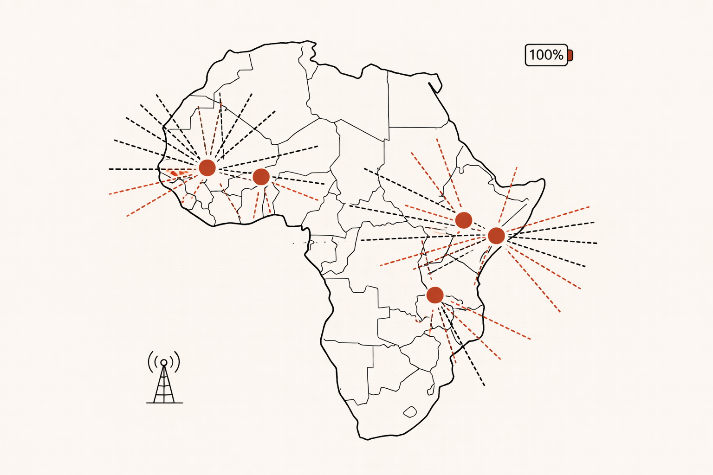
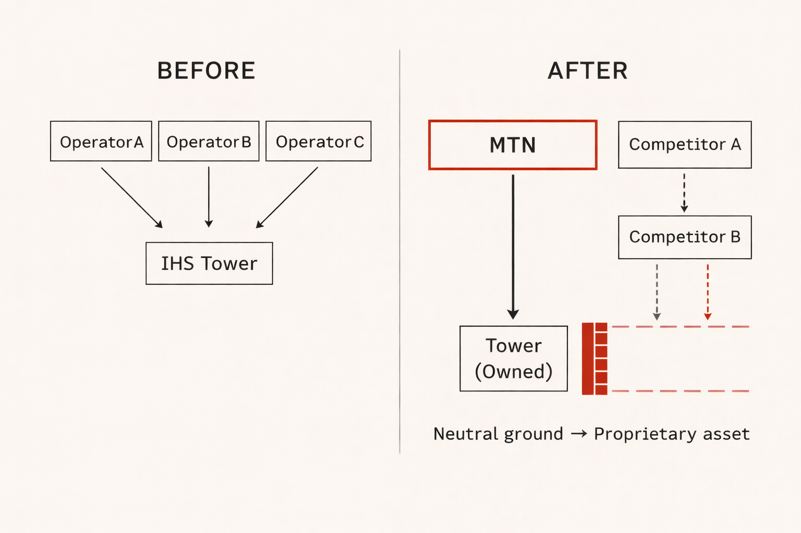
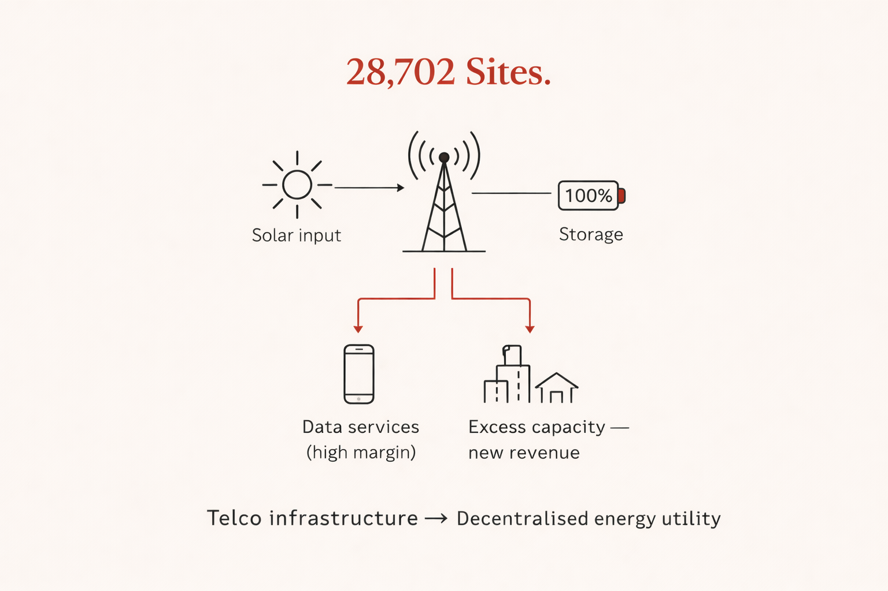

Telecom · Energy · Platform Economics · 25 February 2026
Growth Operator Africa: MTN Just Became an Energy Company. Does Your Portfolio Know?
62% of a $6.2 billion infrastructure company's revenue came from one client. That client just bought the whole thing. The "neutral pipes" era in African telecoms is over — and most energy VCs haven't updated their models yet.

I had a CMO once who refused to say good morning. Not out of rudeness. Out of discipline. Every single day, his opening line was the same: "How much revenue did your products make yesterday?" No coffee. No pleasantries. Just the number. The first time he said it to me, it felt like a gut punch. I was a product person — I cared about features, user journeys, engagement loops. Revenue was someone else's column. But after three months of that daily ritual, something shifted in my DNA as a growth operator in emerging markets. I stopped managing products. I started owning P&Ls. The distinction sounds subtle. In practice, it's the difference between building something that looks good on a roadmap and building something that actually moves money.
I'm opening with that story because on February 17, 2026, MTN Group announced it would fully acquire IHS Towers in a transaction valuing the company at $6.2 billion. They stopped saying good morning. They looked at 28,702 towers they were leasing from a company they 24.7% owned — a company that derived 62% of its revenue from MTN itself — and asked the only question that matters: why are we paying someone else's margin on our own infrastructure? The answer cost $2.2 billion. The upside is worth multiples of that. And almost nobody is talking about the right part of it.
The Death of Neutral Ground: Why Every Africa Market Entry Plan Needs a Rewrite
The telecom digital strategy commentariat has landed on three narratives for this deal: corporate governance friction between MTN and IHS management, OPEX savings from internalising lease costs, and standard vertical integration logic. All three are accurate. All three are looking at the wrong board. The frame that actually matters for any Africa market entry plan, any platform economics investment thesis, or any emerging markets portfolio company that touches African digital infrastructure is this: the era of neutral pipes is over. This is a structural shift — not unlike the collapse of the investment-delegation model in VAS, where operators discovered too late that outsourcing distribution also meant outsourcing strategic control.
The entire TowerCo model — IHS, Helios, American Tower Africa — was built on a single founding premise: separation creates neutrality. By carving tower assets out of operators' balance sheets and into independent infrastructure companies, the industry deliberately created a commons. Any operator could colocate on any tower. A new entrant in Nigeria could access the same physical infrastructure as MTN. A fintech with an MVNO licence could reach the same tower density as an operator with 30 years of market presence. The sharing economy came to African telecoms and, for about a decade, it worked.

MTN just ended it. When this deal closes — expected before end of 2026, pending regulatory approvals — the largest independent neutral infrastructure provider on the African continent ceases to exist as a neutral party. It becomes a wholly owned asset of Africa's biggest mobile operator. Every competitor currently colocating on those 28,702 towers is now, structurally, paying rent to their largest rival. I call this the Balkanisation of African infrastructure. And for any growth operator or VC building a position in African digital markets, it is the single most important variable to update for 2026.
Spectrum vs. Steel: The Invisible 5G Moat Your Africa Digital Strategy Missed
The standard take on tower ownership is about steel — physical assets, depreciation schedules, lease yields. That framing made sense in a 4G world. In a 5G world, it fundamentally misses what's actually being acquired. 5G is not faster 4G. The physics are different. Millimetre-wave signals travel shorter distances and degrade through obstacles, which means the quality of a 5G data product is directly and inescapably determined by physical site density. You cannot engineer around it with software. You cannot solve it with a better antenna. You need more sites, closer together, with more control over what runs on them.
This is what MTN is actually buying: physical constraint control over 5G network quality in its five core African markets. A tower leaseholder can put equipment on a site. An owner decides what equipment goes on that site, when it gets upgraded, who else gets to colocate, and at what commercial terms. In a 5G competition for enterprise data contracts — the high-margin B2B revenue that every Africa digital strategy is now pivoting toward — the operator who controls site density sets the product quality ceiling for the entire market. This is the same depth-over-breadth logic I analysed in Airtel's infrastructure pivot — the difference is that Airtel chose to go deep voluntarily, while MTN's competitors are now being forced into shallower positions whether they like it or not. For any platform economics model built on the assumption that infrastructure access is commoditised, that assumption just expired in Nigeria, Ghana, Côte d'Ivoire, Uganda, and Cameroon simultaneously. The moat isn't the steel. It's the spectrum of what can run on it. And MTN just bought the right to decide.
Telco as Utility: The Energy Arbitrage Play No One Priced Into the Deal
This is where the analysis gets uncomfortable for a specific category of investor — and I want to be precise about why. Diesel is the primary power source for telecom towers across Sub-Saharan Africa. It is expensive, volatile, and dollar-denominated in markets where revenues are in local currency. IHS's own debt structure became distressed in 2025 partly because of this mismatch: $3.27 billion in borrowings, 85% in foreign currency, with energy costs inflating faster than long-term lease contracts allowed for repricing. MTN inherited that problem. But MTN also inherited 28,702 potential micro-grid anchor points.

Tower sites already have the three things that make distributed energy infrastructure viable in African markets: physical land rights — notoriously hard to secure at scale — existing community presence, and electrical connections however unreliable. The hardest part of building a distributed energy network in Africa, acquiring those physical footholds, is already done. MTN paid $2.2 billion for it. The energy optionality wasn't in the deal memo. It was in the asset. The unit economics logic runs simply: own the solar panels and batteries on 28,702 sites, charge them cheaply off-peak or from the sun, run high-margin data services on stored power when the grid fails. In markets where grid reliability is a competitive variable — not a background condition — whoever controls the batteries controls the most valuable infrastructure sovereignty position in the market.
Now here is the question I'd be asking if I were running due diligence on any energy startup in West or East Africa right now: does your portfolio company's moat depend on building physical infrastructure from scratch — land rights, community trust, grid connection points — in markets where MTN just acquired 28,702 of those anchor points in a single transaction? If the answer is yes, your investment memo has a problem. Not because the opportunity disappears. Because the "absent incumbent" assumption your platform economics model was built on no longer holds. MTN is not coming. MTN is already there. The question is whether your portfolio company becomes their competitor, their tenant, or their distribution partner — three completely different businesses with three completely different unit economics.
The Operator Signal: In 12 years scaling digital products in Africa, the gap I've seen most consistently is between what an investment deck assumes about infrastructure and what an operator finds on the ground. Infrastructure neutrality has been a foundational assumption in most African digital market entry models for a decade — treated as a given in market sizing slides, distribution strategy slides, competitive moat slides. It is no longer a given. The operators knew it was fragile long before this deal was announced. We always knew that leasing infrastructure from a competitor-adjacent entity was a coordination tax, not a permanent arrangement. This deal just put a dollar figure on what "permanent" actually meant.
What VCs Put in Decks vs. What Growth Operators Find on the Ground
I want to close with something that doesn't get said enough in emerging markets investment circles. I have read a lot of pitch decks for African digital products. I have also been the person on the ground trying to execute what those decks describe. The gap between those two experiences is where most of the risk in African digital investing actually lives — and it is almost never the risk that shows up in the model.
The MTN/IHS deal is a perfect illustration of that gap in real time. For any Africa market entry play currently in a portfolio or pipeline that relies on infrastructure neutrality as a structural assumption — whether in energy, fintech, logistics, or mobile commerce — that assumption needs to be stress-tested against this new reality. Not as a footnote. As a first-order variable. The parallel in e-commerce is instructive: Jumia's entire turnaround was built on the recognition that whoever owns the physical distribution infrastructure owns the market — the same logic now applies to tower infrastructure in telecoms. And in the markets people overlook — Benin, Zambia, the DRC, Madagascar — the board hasn't been captured yet. Africa market entry cost is still proportionate to the reward. The unit economics in those Tier 2 markets still work in your favour. That is where the asymmetric bet sits in 2026, and that is the kind of ground-level read that never makes it into a deck.
The number MTN asked about yesterday was $1.1 billion in annual savings, 28,702 sites, and the physical backbone of what is quietly becoming the continent's largest decentralised energy utility. The question is whether your portfolio asked the same question before the deal closed.
If this surfaces a question you're sitting on — a deal, a platform economics challenge, or an Africa market entry assumption that needs stress-testing — reach me directly at jpouandji@gmail.com. You can also connect on LinkedIn, or follow Growth Operator Notes for the next deep-dive.
Telecom · Infrastructure · Platform Strategy · 23 February 2026
Beyond the Map: What Airtel's Pivot Tells Us About the New Rules of Growth
Airtel Africa is no longer chasing new countries. They're becoming an infrastructure company that happens to have a mobile network.

I've been watching the headlines about Airtel Africa's recent restructuring, and it feels like a full-circle moment. For years, the narrative in the "Real Economy" was about the land grab—adding countries, chasing subscriber counts, and showing a map covered in red.
But Airtel just flipped the script. They aren't chasing new flags anymore. They're becoming an infrastructure company that happens to have a mobile network.
The "Plumbing" is the Product
Most people see "Data Centers" or "Fiber Networks" as boring back-end costs. But as a Growth Operator, I see them as the ultimate Platform Economics play. By spinning off Nxtra and Telesonic, Airtel is moving from the volatile world of B2C "prepaid" users to the stable, high-margin world of B2B infrastructure.

The Lesson for Scale-ups: Stop obsessing over your total user count if your "plumbing" is leaky. If you've built a tool to manage your logistics or data that is better than the product you're selling—that might be your real business.
Leapfrogging isn't just for Startups
Airtel's partnership with Starlink is the ultimate Africa market entry "hack". Instead of the grueling process of burying fiber in remote regions, they are "renting" the sky. It's a reminder that being a growth operator isn't about owning every part of the chain; it's about orchestrating the most efficient one. (This same infrastructure sovereignty tension is exactly what I unpacked in my analysis of MTN's $6.2B IHS Towers acquisition.)
The Bottom Line
We are entering the era of Unit Economics Validation. The "Coordination Tax" of managing 14 different regulatory environments is too high if you aren't monetizing the core infrastructure. Airtel is choosing depth over breadth. In 2026, the winners in the African tech space won't be the ones with the biggest map, but the ones with the most "indispensable" pipes.
E-commerce · Africa · 9 February 2026
The Death of the "Amazon of Africa" Label
For a decade, Jumia was the poster child for "Burning Cash in Africa." As we hit early 2026, the data tells a different story.

Between 2012 and 2022, the narrative was a cycle of high-level management in Dubai, massive marketing spends, and unsustainable "Last Mile" logistics costs. But under CEO Francis Dufay, Jumia executed a "Shrink-to-Grow" strategy that many VCs once thought impossible for a pan-African giant.
The 2026 Performance Benchmarks. The results of this "Hard Ops" pivot are visible in Q3 2025 and Q1 2026 metrics: fulfillment expense per order has plummeted 22%, reaching approximately $1.86. Revenue surged 25% year-over-year despite a leaner footprint, driven primarily by the Nigerian market.

Why "Pickup" is the new "Moat." Perhaps the most significant shift is Jumia's move away from expensive home delivery. By scaling its network of Pickup Stations (PUDOs) to over 1,500 locations, Jumia solved two problems at once: slashed delivery costs and bridged the "Trust Gap."
Jumia isn't trying to be the "Amazon of Africa" anymore. They are becoming the Logistics Backbone of the continent. By opening their delivery network to third-party social commerce sellers (Jumia Delivery), they've turned their biggest cost center into a new revenue stream.
The End of "Vanity Growth" in African E-commerce. The 2026 e-commerce landscape is defined by three Hard Ops realities for any growth operator in emerging markets: profitability over perimeter, the rise of Agentic Commerce, and Logistics as a Service. The real winners aren't the companies selling the most shirts — they are the companies moving the most parcels. The same platform economics logic I applied to Airtel's infrastructure pivot and MTN's tower acquisition applies here: whoever controls the indispensable pipe wins.
Telecom · Platform Strategy · 13 January 2026
VAS & Telcos: What We Got Wrong — And Why It Matters Now
A structural analysis of why Value-Added Services were misunderstood for a decade, what broke the investment-delegation model, and why the "premium content" answer misses the real question.

If you have ever worked in or around a telecom operator, you have probably heard some version of this sentence: "VAS are just extra services." That perception is widespread — and it is precisely why VAS have been so poorly understood for years.
What VAS really were. Before app stores. Before widespread card payments. Before subscriptions became the default. VAS enabled telecom operators to monetise non-banked users, expand ARPU beyond connectivity, distribute digital products at massive scale, and turn trust and billing into a platform. In many emerging markets, VAS were the first large-scale digital economy people ever interacted with. They were not elegant. They were effective.

The Investment-Delegation Model: Operators didn't build content; they delegated it to aggregators and studios. The operator provided the infrastructure (billing, distribution, trust), the aggregator managed content and customer experience. This worked because margins were high enough to split three ways: content creator, aggregator, operator.
What broke it. The model worked until it didn't. Margin compression from data bundles, rise of app stores as the default distribution, regulatory pressure on auto-renewals, and WhatsApp/YouTube replacing carrier portals all contributed to its decline.
The Bottom Line. VAS is not about "premium content" — it's about distribution infrastructure. The question isn't "what content should we offer" but "how do we become indispensable pipes for digital services in markets where traditional payment rails are weak?" That's the question that matters in 2026.
Sources:
•
HEC Paris Knowledge - Platform Strategy Research
• Industry analysis and operational experience